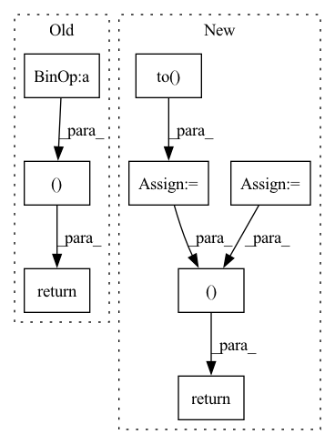

Pattern ID :36324

Before Change
ciou_term = d + alpha * ar_loss;
//print(iou,iou-giou_term)
//print(c,u)
return iou-ciou_term,iou
def box_giou(self,box1,box2):
box_c = self.box_c(box1,box2)
c = self.get_area(box_c)
After Change
box_c = torch.cat((l,t,r,b))
return box_c.permute(1,0)
def box_ciou(self,box1,box2):
ciou = torch.zeros(0,1).to(device)
iou = torch.zeros(0,1).to(device)
//if box2.size(0) == 0 :
// return ciou,iou
box_c = self.box_c(box1,box2)
//print(box_c.shape)
c = self.get_area(box_c).unsqueeze(1)
iou = find_jaccard_overlap(box1, box2)
w1,h1 = (box1[...,2] - box1[...,0]).unsqueeze(1),(box1[...,3] - box1[...,1]).unsqueeze(1)
w2,h2 = (box2[...,2] - box2[...,0]).unsqueeze(1),(box2[...,3] - box2[...,1]).unsqueeze(1)
x1,y1 = (box1[...,2] + box1[...,0]).unsqueeze(1)/2,(box1[...,1] + box1[...,3]).unsqueeze(1)/2
x2,y2 = (box2[...,2] + box2[...,0]).unsqueeze(1)/2,(box2[...,1] + box2[...,3]).unsqueeze(1)/2
u = (x1 - x2) * (x1 - x2) + (y1 - y2) * (y1 - y2);
//if c==0 :
// ciou_term = iou
//else :
//print(c.shape,u.shape)
d = u/c
//print(d.shape)
ar_gt = w2/h2
ar_pred = w1/h1
ar_loss = 4 / (math.pi * math.pi) * (torch.atan(ar_gt) - torch.atan(ar_pred)) * (torch.atan(ar_gt) - torch.atan(ar_pred));
alpha = ar_loss / (1 - iou + ar_loss + 0.000001);
ciou_term = d + alpha * ar_loss;
//print(ar_gt.shape,ar_pred.shape,ar_loss.shape,alpha.shape,torch.atan(ar_pred).shape)
mask = (c == 0)
ciou_term = ciou_term * (~mask) + iou*mask
//print(ciou_term.shape,ciou.shape,iou.shape,box1.shape,box2.shape)
ciou = torch.cat((ciou,ciou_term))
//print(iou,iou-giou_term)
//print(c,u)
return iou-ciou,iou
def box_giou(self,box1,box2):
box_c = self.box_c(box1,box2)
c = self.get_area(box_c).unsqueeze(1)
In pattern: SUPERPATTERN
Frequency: 3
Non-data size: 8
Instances
Fragment ID: 102913026
Project Name: eric612/mobilenet-yolo-pytorch
Commit Name: e67c6aa8fb3ddaeb1e81326e842beec4f025c300
Time: 2021-04-14
Author: eric612kimo@yahoo.com.tw
File Name: models/voc/yolo_loss.py
M Class Name: YOLOLoss
N Class Name: YOLOLoss
M Method Name: box_ciou(3)
N Method Name: box_ciou(3)
M Parent Class: nn.Module
N Parent Class: nn.Module
M File Name: models/voc/yolo_loss.py
N File Name: models/voc/yolo_loss.py
M Start Line: 248
M End Line: 268
N Start Line: 248
N End Line: 283
'>
Before Change
clamp_out = quantize_out.clamp(n, p)
dequantize_out = (clamp_out + offset) * delta
mask_tensor = quantize_out.ge(n) * quantize_out.le(p)
// NOTE: There is no uint4, uint16 in PyTorch
// Use uint8 if bitwidth less than or equal to 8, otherwise use int32 as fallback
dtype_for_clamp_out = torch.uint8 if tensor_quantizer.bitwidth <= 8 else torch.int32
intermediate_result = IntermediateResult(clamp_out.to(dtype=dtype_for_clamp_out),
encoding_min, encoding_max,
delta, offset, mask_tensor, steps)
return dequantize_out, intermediate_result
// pylint:disable=too-many-locals
def calculate_gradients(tensor: torch.Tensor,
After Change
x_round = torch.round(tensor / delta) - offset
x_quant = x_round.clamp(zero, num_steps)
x_dequant = (x_quant + offset) * delta
mask_tensor = x_round.ge(zero) * x_round.le(num_steps)
// Downcast x_quant if bitwidth is less than or equal to 8 to reduce memory consumption
if tensor_quantizer.bitwidth <= 8:
x_quant = x_quant.to(dtype=torch.uint8)
intermediate_result = IntermediateResult(x_quant,
encoding_min, encoding_max,
delta, offset, mask_tensor, num_steps,
is_symmetric, is_unsigned)
return x_dequant, intermediate_result
// pylint:disable=too-many-locals
def asymmetric_gradients(tensor: torch.Tensor,
'>
Fragment ID: 102913010
Project Name: quic/aimet
Commit Name: 558cce71e5d8f55f75a7f101e0fed690e5732ba5
Time: 2022-10-06
Author: quic_geunlee@quicinc.com
File Name: TrainingExtensions/torch/src/python/aimet_torch/quantsim_straight_through_grad.py
M Class Name: AnonimousClass
N Class Name: AnonimousClass
M Method Name: calculate_forward_pass(4)
N Method Name: calculate_forward_pass(4)
M Parent Class:
N Parent Class:
M File Name: TrainingExtensions/torch/src/python/aimet_torch/quantsim_straight_through_grad.py
N File Name: TrainingExtensions/torch/src/python/aimet_torch/quantsim_straight_through_grad.py
M Start Line: 332
M End Line: 350
N Start Line: 440
N End Line: 466
'>
Before Change
// print(f"Train set: Average loss: {train_loss/ len(data):.4f}, "
// f"Accuracy: {correct}/{len(data)} ({correct/len(data):.2f}%)")
return train_loss / len(data), correct / len(data) // 返回平均损失和平均准确率
After Change
group=0
output_batch=[]
aa=0
train_acc=0.
i=0
for id,(data, target) in enumerate(train_loader): // batch之前组装到data数据集里的,pytorch的MBDG统一用这种方式进行,会按序列一个个batch训练
//print("id:",id)
optimizer.zero_accum_grad() // 梯度清空
//这里执行单样本操作，但是没有参数决定是单样本，依赖这里面的数据集的组装形式（TensorDataset(data, target)），和上面的train_loader一样，默认都是一个torch一个torch来
// 数据组装中torch的维度决定你想要进行多少样本的梯度训练，取决于一开始的数据组装的结构
for iid,(X_microbatch, y_microbatch) in enumerate(TensorDataset(data, target)): //这里相当于逐样本
optimizer.zero_microbatch_grad()
output = model(torch.unsqueeze(X_microbatch.to(torch.float32), 0)) //这要是这里要做升维
loss = criterion(output, torch.unsqueeze(y_microbatch, 0))
loss.backward() //梯度求导，这边求出梯度
optimizer.microbatch_step() // 这个step做的是每个样本的梯度裁剪和梯度累加的操作
optimizer.step() // 这个做的是梯度加噪和梯度平均更新下降的操作
//训练集测试损失值和准确率
train_output=model(data.to(torch.float32))
train_loss=criterion(train_output,target).item()
prediction = train_output.argmax(dim=1, keepdim=True) // 将one-hot输出转为单个标量
correct = prediction.eq(target.view_as(prediction)).sum().item() // 比较得到准确率
train_acc=100. * correct/len(data)
i+=1
// print(f"batch: {i}, "f"Train set: loss: {train_loss:.4f}, "
// f"Accuracy: {correct}/{len(data)} ({train_acc:.2f}%)")
return train_loss, train_acc // 返回平均损失和平均准确率
'>
Fragment ID: 102913027
Project Name: jefffffu/awesome-differential-privacy-and-meachine-learning
Commit Name: 2ebbe536f3de4fe260e92dfa2a45dd3bab30a414
Time: 2022-12-06
Author: 1193147851@qq.com
File Name: train_and_validation/train_with_dp.py
M Class Name: AnonimousClass
N Class Name: AnonimousClass
M Method Name: train_dynamic_add_noise(4)
N Method Name: train_dynamic_add_noise(4)
M Parent Class:
N Parent Class:
M File Name: train_and_validation/train_with_dp.py
N File Name: train_and_validation/train_with_dp.py
M Start Line: 10
M End Line: 40
N Start Line: 13
N End Line: 45